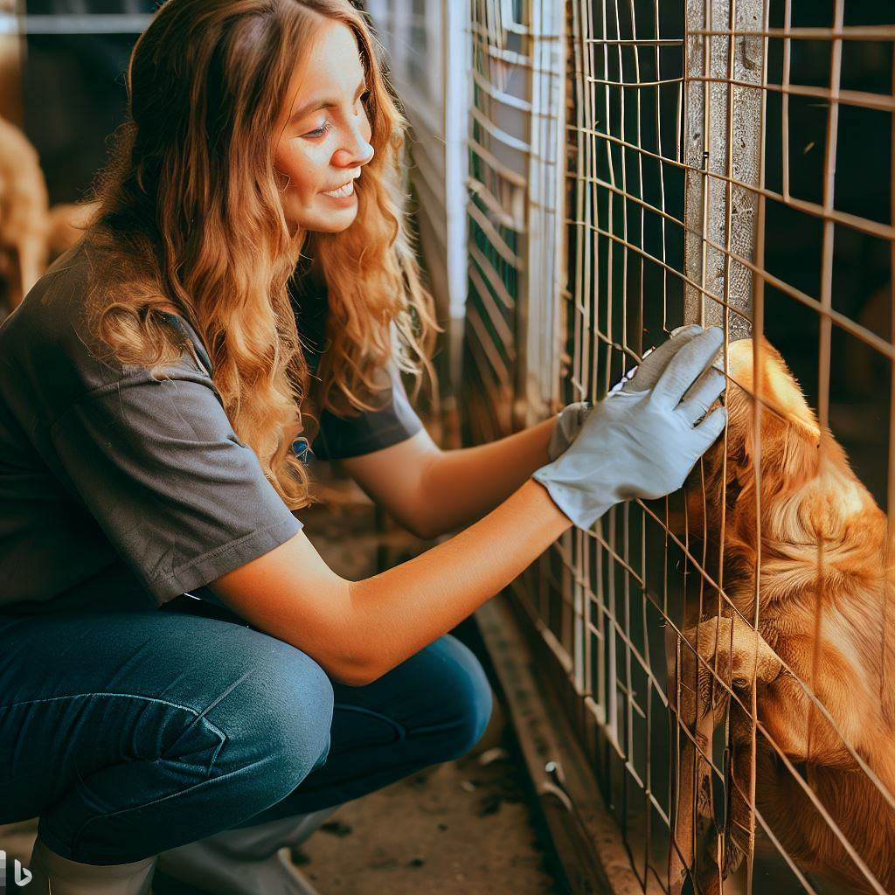

O que é?
O voluntariado envolve dedicar seu tempo, habilidades e esforços para ajudar causas sociais, organizações não governamentais (ONGs) e projetos comunitários sem receber remuneração financeira em troca.
Para que serve?
O voluntariado serve para apoiar e fortalecer comunidades, ajudar pessoas em situação de vulnerabilidade, promover mudanças positivas e contribuir para a construção de uma sociedade mais justa e solidária.
Como usar?
Você pode se envolver em projetos voluntários, participar de campanhas de arrecadação de fundos e oferecer suas habilidades para ajudar organizações ou dedicar seu tempo a auxiliar diretamente pessoas que precisam de apoio.
Como isso ajuda o mundo?
O voluntariado fortalece comunidades, melhora a qualidade de vida de pessoas vulneráveis e promove mudanças positivas, tendo um impacto significativo na sociedade.